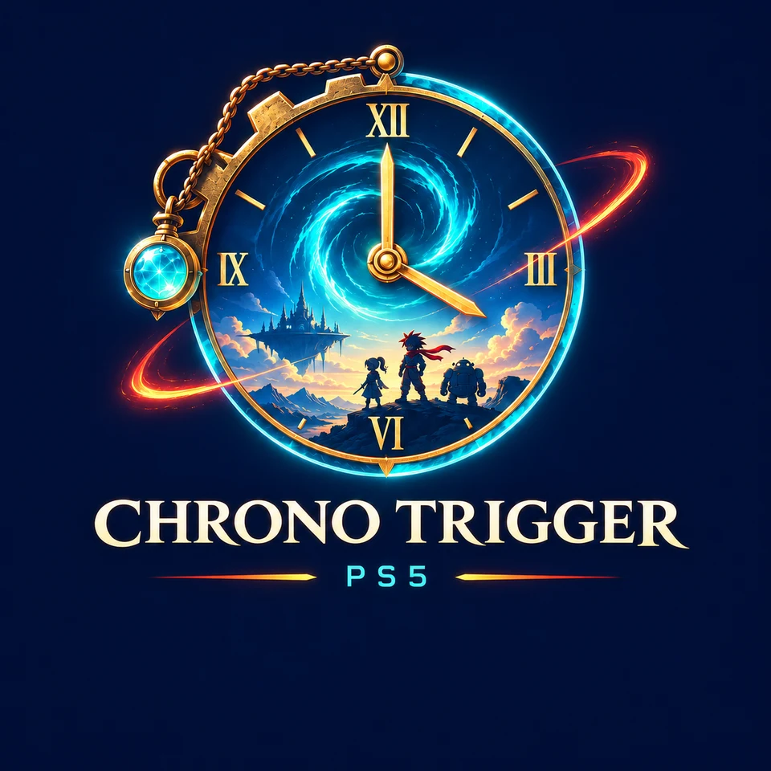

A native foundation
Ahead-of-time game code, a native home-screen application, a direct-memory heap and a software framebuffer presented through PS5 VideoOut.
Chrono Trigger, recompiled for PS5.
Built on Egg of Time by Power Pudu.
Native game code. DualSense controls. Flexible widescreen presentation. Bring your own Nintendo DS game dump and build it locally.

THE NEXT CHAPTER STARTS WITH THE SOURCE.CTPS5 brings the Nintendo DS USA version to PS5 through static recompilation. Game functions become C and run as native code, with a runtime providing the DS hardware behavior.
Ahead-of-time game code, a native home-screen application, a direct-memory heap and a software framebuffer presented through PS5 VideoOut.
Wider rendering in supported gameplay areas. Proportional framing and matching side panels for fixed menus, dialogue and other original layouts.
Binding-aware controller prompts, persistent configuration and independently named graphics packs make future changes easier to manage.
The public release contains the port source, build tools, documentation and original PC source. Each player generates the game code locally from their own unmodified USA NDS file.
Download the CTPS5 source package or clone the GitHub repository. Read the build guide and component notices.
Download source ZIP ↓Install the pinned public PS5 SDK, SDL, LLVM and dsd. The build script validates your USA YQUE NDS file and generates C locally.
See build requirements →Copy the generated PPSA90435 folder into your homebrew directory, retain its runtime modules and add your own NDS file.
Full installation instructions →kstuff · Shadow Mount Plus 1.7beta11
Other firmware and launcher combinations remain unverified.
/data/homebrew/PPSA90435/
eboot.bin
sce_module/
sce_sys/
/data/eggoftime/rom/CT.ndsKeep your existing /data/eggoftime/ folder when updating. Back up saves first. The public source package contains no ROM, generated game code or game executable. How distribution works →
Runtime menus use DualSense symbols and labels. Prompts follow your active bindings, while the default layout preserves the DS A/B arrangement.
Move with the D-pad or left stick. Hold Create for three seconds to exit. Some button letters baked into original game art remain unchanged.
All controls & settings →Illustrative layout, not a gameplay screenshot.
Open System Settings with Create at the title screen, or Options then Create in gameplay. Panels do not create extra map geometry.
Build the game on your own Linux machine. Dependencies are pinned, the original PC source is preserved and public packages are checked for known game-derived artifacts.
git clone https://github.com/savageforengland-hue/chrono-trigger-PS5.git CTPS5
cd CTPS5
bash tools/bootstrap-ps5-deps.sh
export PS5_PAYLOAD_SDK="$PWD/.deps/sdk/opt/ps5-payload-sdk"
export SDL3_SOURCE="$PWD/.deps/SDL3"
export LLVM_CONFIG=llvm-config-19
export DSD=dsd
bash ps5/build.sh /absolute/path/to/CT.ndsInstall host prerequisites and dsd first. The script generates a native app folder locally.
CTPS5 exists because of Power Pudu’s Egg of Time, the original native PC project. Its recompiler, runtime, tools and reverse-engineering work are the foundation of this port.
This is a downstream PS5 project. The original PC author’s copyright and MIT license are preserved, alongside the licenses and notices of the PS5 components.
By Power Pudu · Copyright 2026 · MIT
Download pristine original source ↓Unmodified source archive, including the original PC README and notices. SHA-256 checksums are supplied for both source packages.
No. CTPS5 is based on Egg of Time’s Nintendo DS recompilation, targeting the unmodified USA YQUE NDS dump.
The public project distributes source and tools. You build the game locally from your own NDS. The PS5 executable links generated game code, so it is excluded from public source downloads. ROMs, extracted assets, generated game C and saves are also excluded.
High-resolution output is supported and 4K60 is a target. Sustained 4K at 60 fps has not been measured or guaranteed. The current renderer uses a software framebuffer, and the candidate needs further console testing.
Some gameplay scenes can render wider; other scenes have fixed layouts. Matching panels preserves the central picture with decorated sides. Crop and Stretch are optional, with their respective content and proportion tradeoffs.
Static recompilation, core gameplay, configurable controls and graphics packs form the PS5 profile. PC shader, FFmpeg media replacement, online RetroAchievements and translation patch integrations are disabled in this core-only build.
The retained data directory is /data/eggoftime/. The primary log is /data/eggoftime/eggoftime.log, with fallback paths documented in the troubleshooting guide. Back up personal data before updating.